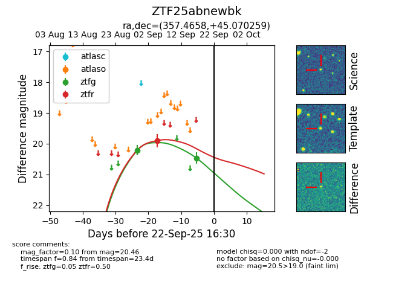
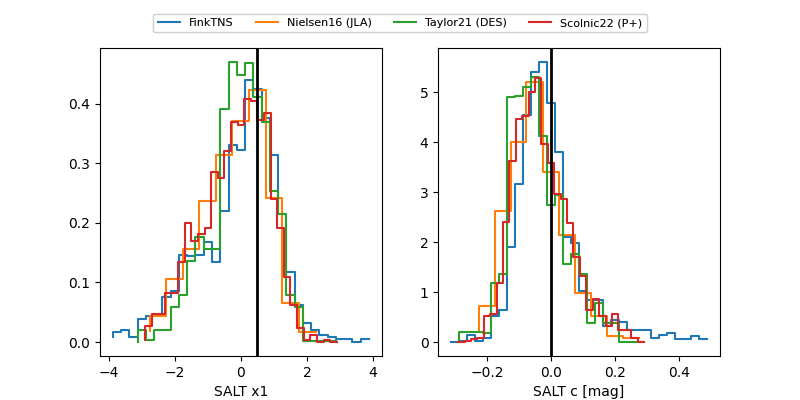

FINK: ZTF25abnewbk
Lasair: ZTF25abnewbk
ALeRCE: ZTF25abnewbk
ZTF25abnewbk (ztf,fink)
equatorial (ra, dec) = (357.4658,+45.07026)
galactic (l, b) = (111.6596,-16.44954)


last ztfg=20.46, ztfr=19.90
2 ztfg, 1 ztfr detections